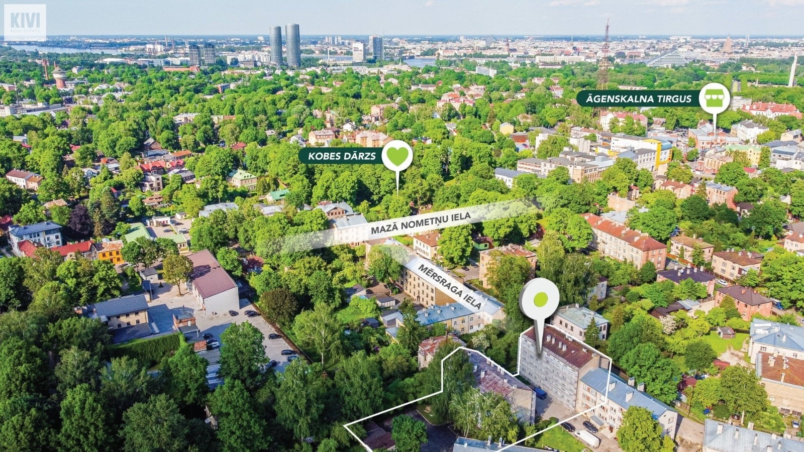

Āgenskalns 
Āgenskalns
- Āgenskalns ir Rīgas pilsētas apkaime Pārdaugavā, Zemgales priekšpilsētā un Kurzemes rajonā, kurā iekļauj arī Rīgas pilsētas daļas Āgenskalna priedes un Klīversalu.
- Āgenskalna apkaimes robežas iezīmē dzelzceļa loks, Mārupīte, Māras dīķis, Ojāra Vācieša iela, Uzvaras bulvāris, Akmens tilts, Daugava, Āgenskalna līcis, Āzene, Zunds, Daugavgrīvas iela, Kliņģeru iela, Kuldīgas iela, Slokas iela, Baldones iela, Dreiliņu iela, Kalnciema iela, Lielirbes iela, dzelzceļš. Pa perimetru apkaimes robežas garums ir 10 091 m. Āgenskalna apkaimes kopējā platība ir 4,6 km², kas ir nedaudz mazāk nekā vidējais apkaimes platības rādītājs Rīgā. Āgenskalnu var identificēt kā diezgan telpiski un funkcionāli vienotu pilsētas teritoriju jeb apkaimi.
Āgenskalna vēsture
- Pirmā zināmā Āgenskalna un visas Pārdaugavas ēka bija nocietinātās Māras dzirnavas, par ko ir ziņas vismaz no 1226. gada. Kā liecina 17. gadsimta kartes, Āgenskalna ciems aizsācies pie tagadējo Meža, Sētas un Nometņu ielu satekpunkta un pamazām paplašinājies gar Nometņu ielas abām pusēm. 17. gadsimtā Āgenskalna apvidus bijis maz apdzīvots. Tur pārsvarā mitinājās latviešu tirdzniecības palīgamatu locekļi un algādži — zvejnieki, enkurnieki, sālsmērītāji, vīna mucu nesēji, ormaņi, laivinieki un citi.
- Nosaukums "Āgenskalns" cēlies 17. gadsimtā no tiesneša Henriha fon Hāgena muižas ar tādu pašu nosaukumu (vācu: Hagenshof, šobrīd zināma kā Švarcmuiža), kam toreiz piederēja zemes no tagadējā Raņķa dambja līdz Kuldīgas ielai. Līdz 17. gadsimtam Pārdaugavā tika izveidoti garenvirziena ceļi, kas sākās pie Āgenskalna līča un gar Zundu, cauri Jura un Iļģu ciemiem un pāri Spilves pļavām veda līdz pat Bolderājai un Daugavgrīvai. Lielā Ziemeļu kara laikā Āgenskalns tika nopostīts, bet vēlāk atjaunots.
- 1785. gadā lielāko Āgenskalna daļu iekļāva Jelgavas priekšpilsētā, tas kļuva par Rīgas pilsoņu vasarnīcu rajonu un atpūtas vietu. 1794. gadā pie Māras dīķa atklāja Altonas ārpilsētas izpriecu iestādi, kas devusi vārdu Altonavas ielai. 1812. gada kara laikā, bailēs no Napoleona karaspēka tuvošanās, nodedzināja visas Āgenskalna ēkas, tādēļ šodien redzamā apbūve galvenokārt veidojusies, sākot ar 19. gadsimta pirmo pusi. Tā tapusi bez noteikta plāna, tādēļ ielu tīkls starp Nometņu un Eduarda Smiļģa ielu ir haotisks. Tagad šī teritorija ir valsts nozīmes pilsētbūvniecības piemineklis un pazīstama tieši ar savu lielisko koka arhitektūras mantojumu.
Dažādi apskates objekti
- Āgenskalna tirgus — Nometņu ielā 64. Celts 1911.—1914. gadā, arhitekts Reinholds Šmēlings, racionālais jūgendstils. Būvniecība pabeigta 1924. gadā.
- Latvijas dzelzceļa vēstures muzejs — Uzvaras bulvārī 2/4.
- Eduarda Smiļģa Teātra muzejs — E.Smiļģa (vēsturiski — Dārtas) ielā 37/39.
- Hartmaņa muižiņa — Kalnciema ielā 28/30. Celta 18. gadsimta beigās — 19. gadsimta 1.ceturksnī baroka un klasicisma stilā.
- Jāņa Akuratera muzejs — O.Vācieša ielā 6a.
- "Bellevue Park Hotel Riga" viesnīca — Slokas ielā 1.
- Ojāra Vācieša muzejs — O.Vācieša ielā 19.
- Paula Stradiņa Klīniskā universitātes slimnīca — Pilsoņu ielā 13. Celta 1908.—1910. gadā neogotikas stilā, arhitekts Reinholds Šmēlings.
- "Radisson SAS Daugava Hotel Riga" viesnīca — Kuģu ielā 24.
- Rīgas Zemgales priekšpilsētas izpilddirekcija — E.Smiļģa ielā 46.
- Uzvaras parks